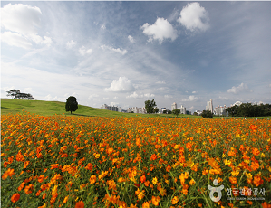
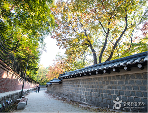
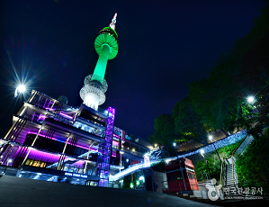
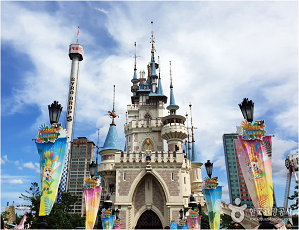

중구의 떡볶이 타운은 우리나라 유일의 떡볶이 전문점 밀집 지역으로길
양쪽을 따라 10여 개의 떡볶이 가게가 늘어서 있답니다.한국전쟁 직후부터 시작,
1970년대 들어 입소문을 타고 떡볶이 거리가 조성되었다고 합니다.
올림픽 공원

88올림픽의 유산 '올림픽 공원'
올림픽공원은 백제 시대의 유적과 현대적 감각의 최신식 경기장이 공존하면서 숲과
잔디밭 또한 훌륭한 여가 공간이다.
올림픽 공원은 체육공간, 문화예술공간, 역사와 교육의
장소, 휴식공간 등 다양한 용도를 갖춘 만능공원으로 자리매김하고 있다.
또한 백제 초기의 유적인 몽촌토성과 몽촌해자(인공호수)를 중심으로 43만평의
대지 위에 조성되어 있고, 세계적인 조각작품들, 기념조형물, 88놀이마당,
산책로, 올림픽스포츠센터 등이 들어서 있다. 이 외에도 각종 유료,
무료 공연이 수시 개최되고 있어 시민들을 위한 다목적 휴식공간의 역할을
담당하고 있다.
서울올림픽을 치른 수영장, 체조경기장, SK핸드볼경기장, 우리금융아트홀, 테니스장을
비롯, 벨로드롬등이 있으며, 각종 스포츠교실은 쾌적한 공간에서 저렴한 가격으로
이용할 수 있다.
또한 88서울올림픽대회를 기념하는 유명 작가들의 조각품들이
야외에 전시 돼있어서 문화예술공간으로도 한 몫을 다한다.
올림픽공원 내에 있는
올림픽공원은 걸어서 한 바퀴 도는데 약 3시간 이상이 걸릴 정도로 넓은 공간이기
때문에 진입로와 동선을 미리 익혀둬야 관람이 편하고 시간을 절약하려면
평화의 광장 옆에서 호돌이열차(Road Train)를 탑승하면 된다.
덕수궁 돌담길

낭만이 가득한 덕수궁 돌담길
기존의 도로를 보행자 중심의 도로로 재정비하고, 보행자를 위해 보도와 차도
공존도로 및 푸르름이 가득한 가로공간인 녹도의 개념을 복합적으로
도입한 우리나라 최초의 사례로 길이는 900m이다.
자연친화적인 점토블록 및 보행자의 안전한 보행권 확보를 위해 차도에 석고석
포장(페이빙스톤) 실시하였고, 시민들의 휴식 공간을 위해 느티나무 외 2종 130주 식재,
평의자 20개 설치하였으며 주변의 역사적 시설인 덕수궁과 연계한 역사적 가로 경관의
창출 및 가로환경 개선하였다.
낭만이 가득한 덕수궁 돌담길은 연인들이 걷기에
더없이 좋은 곳이며, 주변에 서울시립미술관과 서울역사박물관이 있어 문화산책
코스로도 제격이다.
남산서울타워

서울의 중심에서 만나는 특별한 순간
남산서울타워는 한국 최초의 타워형태의 관광명소다.
높이 236.7m를 헤아리는 타워는 해발 243m인 남산의 높이까지 계산하면
실제 높이는 480m에 이르러 가히 동양최고의 타워라고 자랑할 만하다.
남산서울타워는 ''서울타워플라자''와 2005년부터 CJ푸드빌이 임대하여
운영 중인 ''N서울타워''로 구성되어 있다.
남산서울타워는 1969년 TV와 라디오 방송을 수도권에 송출하기
위해 한국 최초의 종합 전파탑으로 세워졌으며, 현재는 서울의 대표적인
복합문화공간이자 랜드마크로 자리잡았다.
롯데월드

모험과 신비가 가득한 곳 '롯데월드'
롯데그룹이 국민들의 여가 선용과 외국인 관광객 유치를 위해 설립하고
운영하고 있는 테마파크이다.
롯데월드는 모험과 신비를 주제로 한 실내 주제공원인 롯데월드 어드벤처, 호수공원인
매직아일랜드, 쇼핑몰, 민속박물관, 아이스링크, 호텔, 백화점 등으로 구성되어 관광,
레저, 쇼핑, 문화를 한곳에서 해결할 수 있는 대단위 복합생활공간이다.
롯데월드 어드벤처에서는 최첨단 탑승시설을 비롯하여, 환상적인 퍼레이드,
각종 영상 시스템, 레이져쇼, 공연, 각국의 음식을 연중무휴로 즐길 수 있다.
롯데월드 어드벤처는 세계에서 가장 큰 실내 테마파크이다.
민속박물관에는 한국의 오천년 역사와 민속 문화가 역사전시관, 모형촌, 놀이마당,
저자거리로 나누어져 쉽고 재미있게 재현되어 있다.
롯데월드 가든스테이지는 롯데월드 공연의 중심무대로 각종 시즌 뮤지컬 쇼,
공개방송 등의 다양한 이벤트가 진행된다.